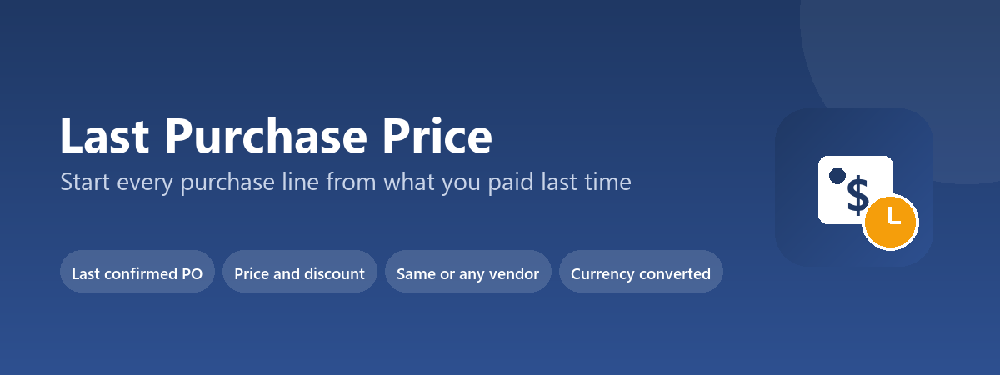

Fills each new purchase order line with the price and discount of the product's most recently confirmed purchase order.
Add a product to a request for quotation and its unit price and discount appear straight away, taken from the last confirmed order for that product. You choose, per company, whether the last price must come from the same vendor or may come from any vendor. Buyers start from what was really paid instead of a blank or list price.
💰 Last confirmed priceThe unit price comes from the purchase order confirmed most recently for that product, not the one created most recently. |
🏷 Discount comes alongThe discount of the last order is carried over with the price, so the net price matches last time. |
🤝 Same vendor or anyTake the last price from the same vendor only, or from whichever vendor sold the product last. |
💱 Currency and unit awareThe last price is converted to the currency and the unit of measure of the new order, then rounded like any purchase price. |
🎨 All products or variantsApply it to every product, or only to products that have variants. |
🏢 Set per companyEach company turns the feature on or off and picks its own options in the Purchase settings. |
Odoo 18.0 • Community & Enterprise • depends on Purchase • Licence LGPL-3
Odoo implementation and development. thecodelegion.com